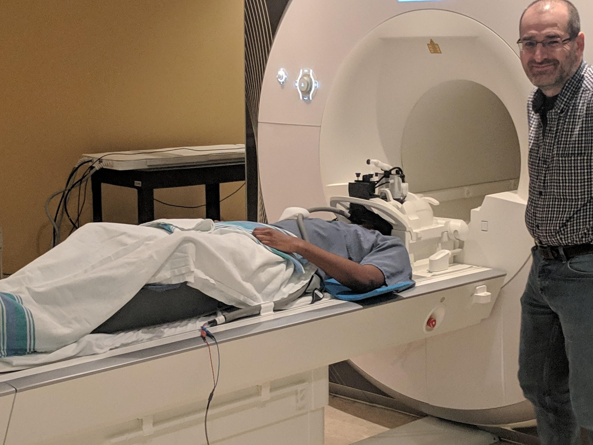
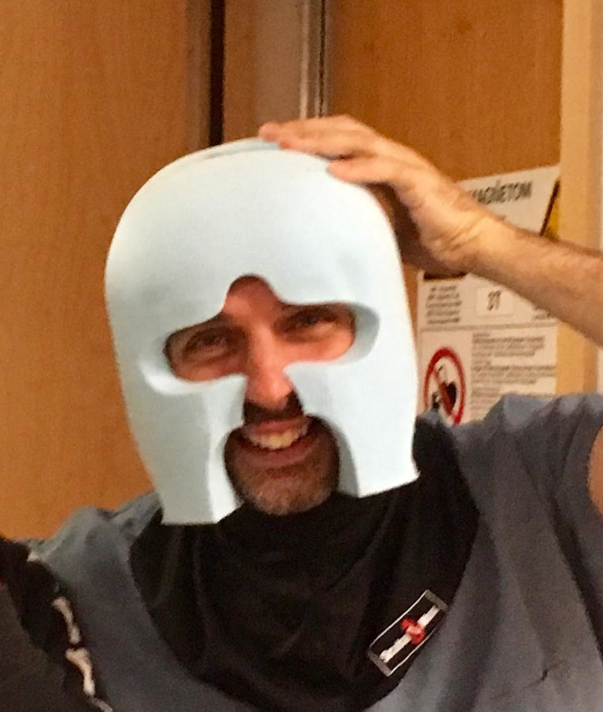

MRI
Image acquisition
Scanner

Magnetic resonance imaging (MRI) for the Courtois neuromod project is being acquired at the functional neuroimaging unit (UNF), located at the “Centre de Recherche de l’Institut Universitaire de Gériatrie de Montréal” (CRIUGM) and affiliated with University of Montreal as well as the CIUSSS du Centre-Sud-de-l’île-de-Montréal. The scanner is a Siemens Prisma Fit, equipped with a 2-channel transmit body coil and a 64-channel receive head/neck coil. Most imaging in the Courtois Neuromod project are composed solely of functional MRI runs. Periodically, an entire session is dedicated to anatomical scans.Personalized head cases

In order to minimize movement, each participant wears a custom-designed, personalized headcase during scanning, built by Caseforge. The headcases are milled based on a head scan of each participant generated using a handheld 3D scanner, and the shape of the MRI coil. Caseforge mills the personalized headcases in polystyrene foam blocks.Hearing protection
In order to provide an additional level of hearing protection against repeated exposure to the noise of the MR scanner, as well as optimize the quality of the auditory stimuli, we implemented two custom hearing protection set-ups for CNeuromod participants. The initial custom set-up was composed of the S15 MRI-compatible earphone system (Sensimetric), standard-sized disposable Comply canal tips (Hearing Components, Inc.; advertised Noise Reduction Rating: 29 dB), and modified commercial earmuffs (Stanley Black & Decker Inc; unmodified advertised Noise Reduction Rating: 27 dB). The commercial earmuffs were modified to render them thinner by cutting the inner section of the earmuff (i.e leaving the external cup intact) and re-attaching the foam ring (i.e. foam that seals around the ear) to the modified earmuff. This modification was necessary to enable the earmuffs to fit inside the head coil (i.e Siemen’s 64-channel), along with CaseForge headcases and the participants’ heads. This version of the custom hearing protection was eventually abandoned due to pressure points it caused on some participants’ jaws, particularly individuals with larger heads, and when worn for extended periods of time (i.e 1h+).
This initial hearing protection set-up was used by participants for the following datasets:(hcptrt),(movie10), (friends) seasons 1-4, and (shinobi).
The second, and current, custom hearing protection set-up is again composed of the S15 MRI-compatible earphone system (Sensimetrics Corporation), “custom” disposable Comply canal tips (Hearing Components, Inc., advertised Noise Reduction Rating: 29 dB), and headphone replacement memory foam rings (Brainwavz Audio). Additionally, each subject selected their “custom” Comply canal tip from one of two types of styles (original and short), each with three sizes (slim, standard, large), based on their ideal comfort level (i.e fit based on their ear canal shape) and relative sense of optimal sound protection.
The second version of the custom hearing protection set-up, which is still currently in use, was used by participants for the (friends) seasons 5-6 datasets.
Sequences
Functional sequences
The parameters of the functional MRI sequence relevant for data analysis can be found in the NeuroMod DataLad. The functional acquisition parameters are all identical to the one used in the hcptrt dataset. The Siemens exam card can be found here, and is briefly recapitulated below. Functional MRI data was acquired using an accelerated simultaneous multi-slice, gradient echo-planar imaging sequence (Xu et al., 2013) developed at the Center for Magnetic Resonance Research (CMRR) University of Minnesota, as part of the Human Connectome Project (Glasser et al., 2016). The sequence is available on the Siemens PRISMA scanner at UNF through a concept to production (C2P) agreement, and was used with the following parameters: slice acceleration factor = 4, TR = 1.49 s, TE = 37 ms, flip angle = 52 degrees (based on Ernst angle calculation), voxel size = 2 mm x 2 mm x 2 mm, 60 slices, acquisition matrix 96x96. The field-of-view was set to cover the full brain (cerebrum and cerebellum) with an AC-PC -16° tilt. In each session, a short acquisition (3 volumes) with reversed phase encoding direction was run to allow retrospective correction of B0 field inhomogeneity-induced distortion.
Brain anatomical sequences
The parameters of the brain anatomical MRI sequences relevant for data analysis can be found in the NeuroMod DataLad. The acquisition parameters are identical for all anatomical sessions. The Siemens pdf exam card of the anatomical sessions can be found here, and is briefly recapitulated below. A standard (brain) anatomical session started with a 21 s localizer scan, and then included the following sequences:
T1-weighted MPRAGE 3D sagittal sequence (duration 6:38 min, TR = 2.4 s, TE = 2.2 ms, flip angle = 8 deg, voxel size = 0.8 mm isotropic, R=2 acceleration)
T2-weighted FSE (SPACE) 3D sagittal sequence (duration 5:57 min, TR = 3.2 s, TE = 563 ms, voxel size = 0.8 mm isotropic, R=2 acceleration)
Diffusion-weighted 2D axial sequence (duration 4:04 min, TR = 2.3 s, TE = 82 ms, 57 slices, flip angle = 78 deg, voxel size = 2 mm isotropic, phase-encoding P-A, SMS=3 through-plane acceleration, b-max = 3000 s/mm2). The same sequence was run with phase-encoding A-P to correct for susceptibility distortions.
gradient-echo magnetization-transfer 3D sequence (duration 3:34 min, 28 = ms, TE = 3.3 ms, flip angle = 6 deg, voxel size = 1.5 mm isotropic, R=2 in-plane GRAPPA, MT pulse Gaussian shape centered at 1.2 kHz offset).
gradient-echo proton density 3D sequence (same parameters as above, without the MT pulse).
gradient-echo T1-weighted 3D sequence (same parameters as above, except: TR = 18 ms, flip angle = 20 deg).
MP2RAGE 3D sequence (duration 7:26 min, TR = 4 s, TE = 1.51 ms, TI1 = 700 ms, TI2 = 1500 ms, flip angle 1 = 7 deg, flip angle 2 = 5 deg, voxel size = 1.2 mm isotropic, R=2 acceleration)
Susceptibility-weighted 3D sequence (duration 4:54 min, TR = 27 ms, TE = 20 ms, flip angle = 15 deg)
.. warning:: T1w, T2w and DWI (from HCP development/aging protocol for Siemens Prisma) and SWI do not have gradient non-linearity correction applied on the scanner. Offline correction can be applied using tools such as gradunwarp, but is not included yet in fMRIPrep pipeline.
Spinal cord anatomical sequences
The parameters of the spinal cord anatomical MRI sequences relevant for data analysis can be found in the BIDS dataset, and included metadata. The acquisition parameters are identical for all anatomical sessions, and follow a community spinal cord standard imaging protocol. The Siemens pdf exam card of the anatomical sessions can be found here, and is briefly recapitulated below. A standard (spinal cord) anatomical session starts with a 21 s localizer scan, and then includes the following sequences:
T1-weighted 3D sagittal sequence (duration 4:44 min, TR = 2 s, TE = 3.72 ms, flip angle = 9 deg, voxel size = 1.0 mm isotropic, R=2 acceleration)
T2-weighted 3D sagittal sequence (duration 4:02 min, TR = 1.5 s, TE = 120 ms, flip angle = 120 deg, voxel size = 0.8 mm isotropic, R=3 acceleration)
Diffusion-weighted 2D axial sequence (cardiac-gated with pulseOx, approximate duration 3 min, TR = 620 ms, TE = 60 ms, voxel size = 0.9 x 0.9 x 0.5 mm, phase-encoding A-P, b-max = 800 s/mm2)
Gradient-echo magnetization-transfer 3D axial sequence (duration 2:12 min, TR = 35 ms, TE = 3.13 ms, flip angle = 9 deg, voxel size = 0.9 x 0.9 x 0.5 mm, R=2 acceleration, with MT Gaussian pulse)
Gradient-echo proton-density weighted 3D axial sequence (same parameters as above, without the MT pulse).
Gradient-echo T1-weighted 3D axial sequence (same parameters as above, except: TR = 15 ms, flip angle = 15 deg).
gradient-echo ME (duration 4:45 min, TR = 600 ms, effective TE = 14 ms (this is a multi-echo sequence), flip angle = 30 deg, voxel size = 0.9 x 0.9 x 0.5 mm, R=2 acceleration)
Stimuli
Visual presentation
All visual stimuli were projected using a Epson Powerlite L615U projector. The images were casted through a waveguide onto a blank screen located in the MRI room.
Auditory system
For functional sessions, participant wore MRI compatible S15 Sensimetric headphone inserts, proving high-quality acoustic stimulation and substantial attenuation of background noise. On the computer used for stimuli presentation, a custom impulse response of the headphones is applied with an online finite impulse response filter using the LADSPA DSP to all the presented stimuli.This impulse response was provided by the manufacturer. Sounds was amplified using an AudioSource AMP100V amplifier, situated in the control room. Participants also wear custom sound protection gear (see section on Hearing protection above).
Stimuli presentation
For the HCP-trt dataset, Eprime scripts provided by the Human Connectome project were adapted for our presentation system, and run using Eprime 2.0. For all other tasks, a custom overlay on top of the psychopy library was used to present the different tasks and synchronize task with the scanner trigger pulses. This software also allowed to trigger the start of the eyetracking system, and onset the stimuli presentation. Trigger pulses were also recorded in the AcqKnowledge software. All task stimuli scripts are available through github.
Physiological measures
Biopac
During all sequences, electrophysiological signals were recorded using a Biopac M160 MRI compatible systems and amplifiers. Measurements were acquired at 1000 Hz. Recodings were synchronized to the MRI scans via trigger pulses. All measurements were recorded and monitored using Biopac’s AcqKnowledge sofware.
Plethysmograph
Participant cardiac pulse was measured using an MRI compatible plethysmograph. A Biopac TSD200-MRI photoplethysmogram transducer was placed on the foot or toe of the participants to obtain beat-by-beat estimates of heart rate.
Skin conductance
Skin conductance, was measured using two electrodes, one applied to the sole of the foot and the other to the ankle, to record the participant electrodermal response.
Electrocardiogram
An electrocardiogram (ECG) was used to measure the electrical activity generated by the heart. The ECG was recorded using three MRI compatible electrodes that were placed adjacent to one aother, on the lower left rib cage, just under the heart.
Respiration
Participant’s respiration was measured using a custom MRI compatible respiration belt. The respiration system consisted of: a pressure cuff taken from a blood pressure monitor (PhysioLogic blood), a pressure sensor (MPXV5004GC7U, NXP USA Inc), and flexible tubing. The cuff was attached to the participant upper abdomen using Velcro strap, and then connected to the pressure sensor, located outside the scanner room, using tubing passed through a waveguide. The pressure signal was recorded using an analog input on the Biopac system, and monitored using AcqKnowledge software.
Mock scanner
Some of our datasets required a comparison between genuine in-scanner conditions and “mock” conditions, where the subject was installed in a fake scanner that reproduced the comfort and aspect of an MRI scanner. This mock setup was also located at UNF, and was equipped with a monitor screen for stimulus presentation as well as audio headphones and response devices (keyboard and video game controller).
Auditory health monitoring
In order to make sure no harm was caused to the participants’ hearing, an auditory health monitoring protocol using a variety of commonly used clinical audiology tests. Baselines were acquired for each of the tests when the participants joined CNeuroMod (November 2018 - July 2019) and also at the beginning of this monitoring protocol (January - February 2021).
Auditory tests
The tests used during this monitoring protocol included:
Otoscopic examination
Tympanometry test
Stapedial reflex test
Pure-tone audiometry test
Standard/Clinical frequency range (250 Hz - 8 kHz)
Extended/Ultra-high frequency range (9 kHz - 20 kHz)
Matrix speech-in-noise perception test
First language (English or French)
Second language (French or English)
Transient-evoked otoacoustic emissions (TEOAE)
Distorsion product otoacoustic emissions (DPOAE)
Distorsion product otoacoustic emissions’ growth function
for F2 = 2 kHz
for F2 = 4 kHz
for F2 = 6 kHz
Experimental conditions
Two types of experimental conditions were developped to assess the potential short- and long-term impacts of the exposure to noise during scanning sessions. The first one comprised two separate sessions: one immediately before a scan and one immediately after that same scan. The second one comprised a single auditory test session scheduled between 48 hours and 7 days after a scan. The results acquired during the delayed sessions were then compared to the data acquired at baseline.
For more details regarding the tests, the experimental conditions or the results, see Fortier et al. (2023).